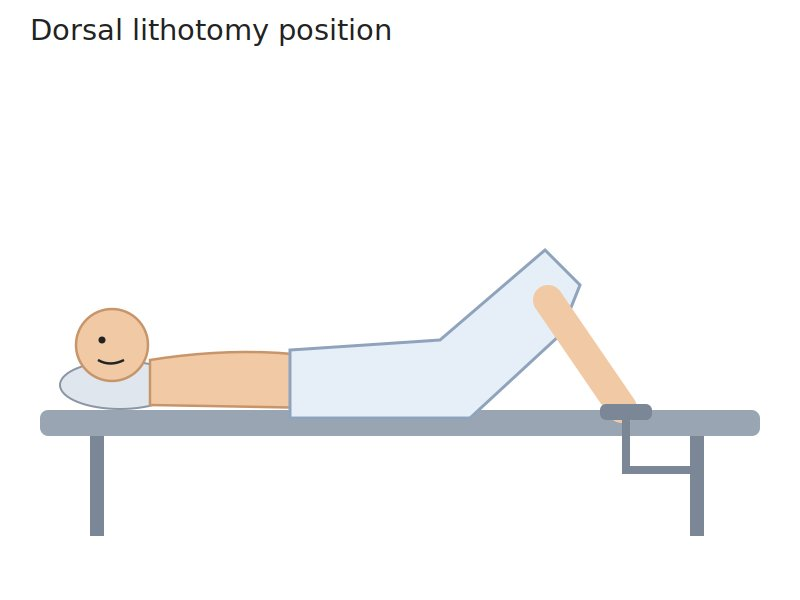
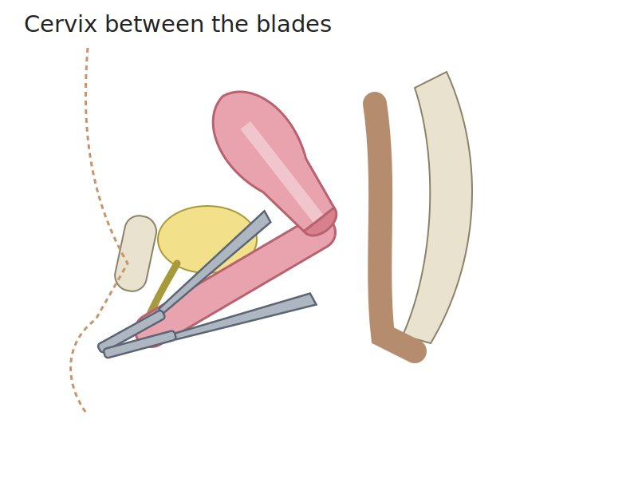
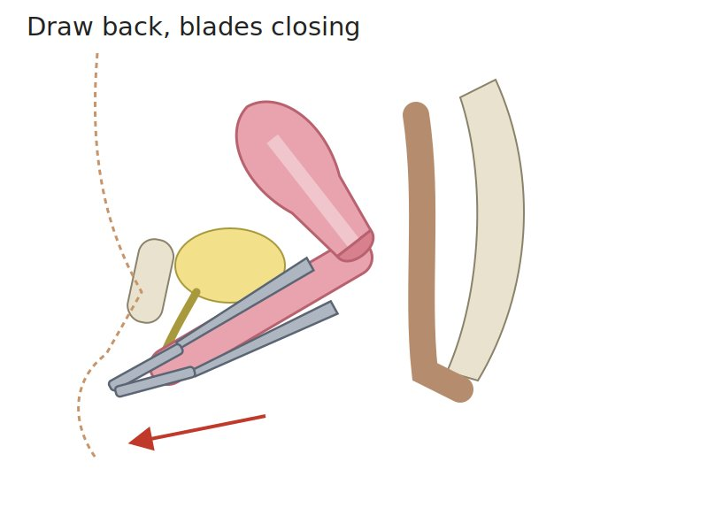
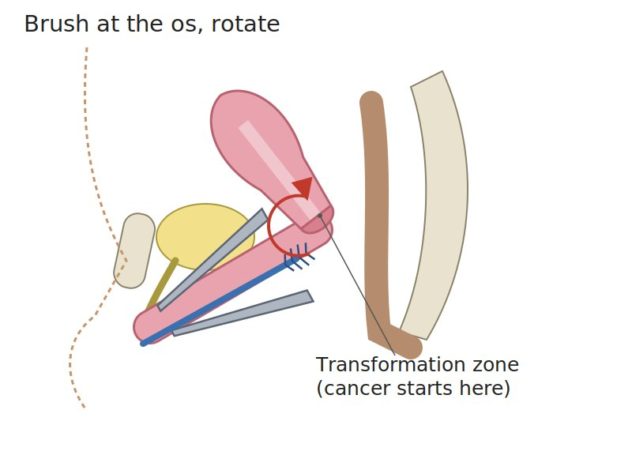
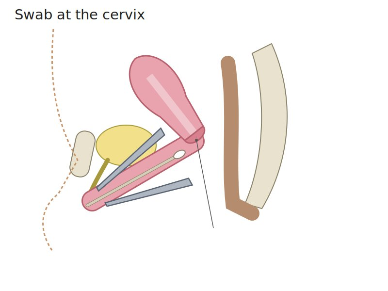
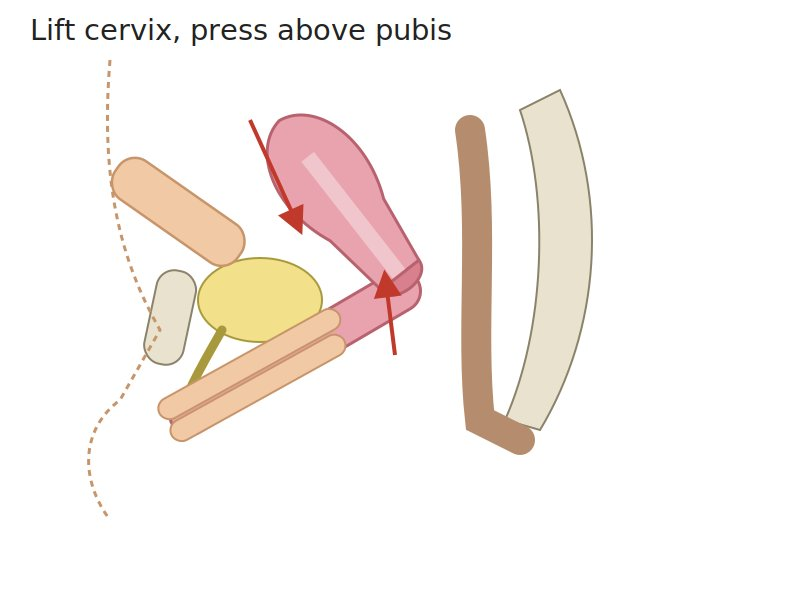
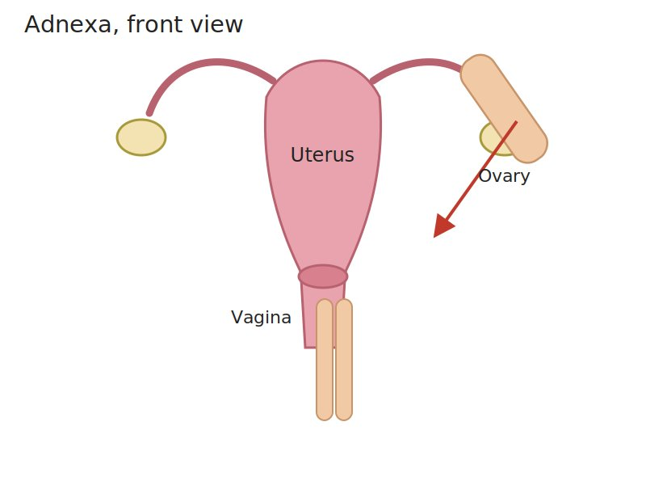
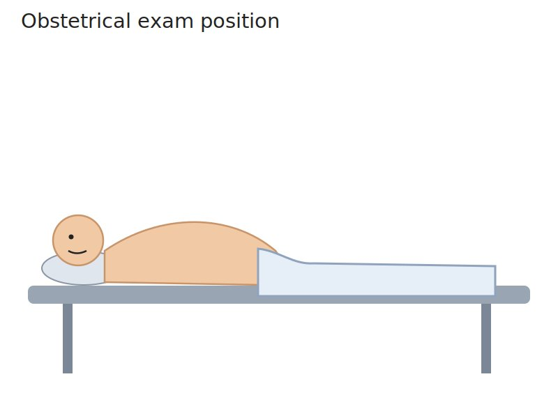
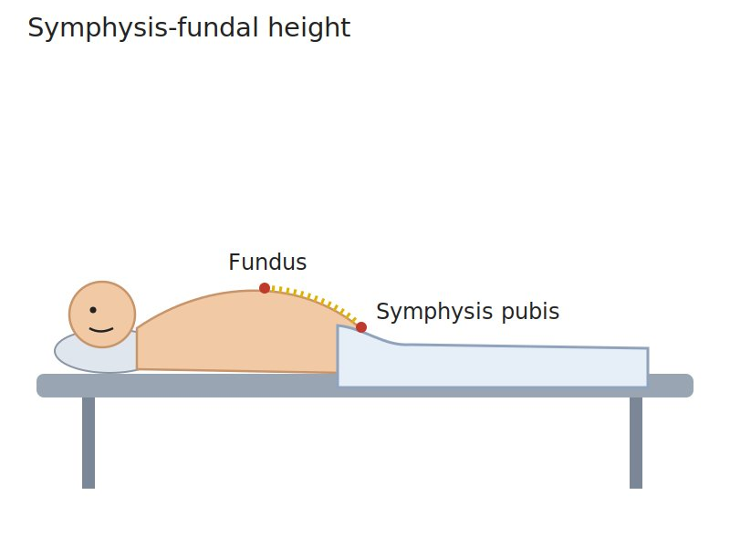

Consent and a chaperone first, then each part in the order you do it: position and look, the speculum, the bimanual exam, and for a pregnant patient the obstetrical abdominal exam. Built from the course objectives (the session has no slides in the course notebook); every picture is a drawing, a diagram or an instrument.
Look: everything shown. Pick a region below to jump to it.
Consent → Position → Look → Speculum → Bimanual → Explain | Pregnant: fundal height → Leopold → heart
Say what you will do before you do it, and the patient can stop at any time. Stop means stop.
General approach
Every pelvic exam
The general approach
Say it first (TOSCE, Teaching Objective Structured Clinical Exam): "Before we start, I'll explain each step before I do it. You can ask me to pause or stop at any point, and I will."
Consent: explain why the exam is needed and what it involves (a speculum to look at the cervix, then a gloved exam with two fingers), and get the patient's agreement
ask whether they have had a pelvic exam before, and whether anything would make it easier (some patients have had painful or traumatic experiences)
offer to let them have a support person present
Chaperone: offer a chaperone (many settings require one) and introduce them
Prepare: ask the patient to empty their bladder · leave the room while they undress from the waist down · gather the speculum, lubricant, gloves, light and any sample kits before they lie down
Explain, then touch: name each step before doing it, use neutral words ("I'm going to touch your thigh now"), and keep checking in: "How are you doing?"
Stop means stop: if the patient asks you to stop, stop straight away, remove the instrument gently, and talk about it
Tap to reveal
Feedback during and after the exam
Give effective and compassionate feedback to the patient during and after the exam
During: say what you are doing and what you see in plain words ("Everything looks healthy so far"); praise their effort ("You're doing well; we're almost done"); watch their face and pause if they tense up
After:
tell them the exam is finished, help them slide back up and sit up, offer tissues
give them privacy to dress before you talk about findings, ideally face to face, sitting down
explain what you found, what the samples are for, when and how results come back, and what happens next
ask how the exam felt for them and whether they have questions
Tap to reveal
Position, drape and look
T2C · Gynecological Exam · 2 manoeuvres
Before the manoeuvres
Steps and landmarks
Say first: "Before we start, I'll explain each step before I do it. You can ask me to pause or stop at any point, and I will."
Position and drape the patient for a pelvic exam:
patient lies on their back with the head slightly raised
heels in the footrests (stirrups), knees bent and allowed to fall apart (dorsal lithotomy position)
ask them to slide down until the buttocks reach the edge of the table
drape from the abdomen over the knees; press the drape down between the knees so you can see the patient's face and they can see you
Light: position the lamp before you start, so you are not adjusting it mid-exam
Look first: inspect the vulva before inserting anything
Tap to reveal
Before you touch
Position and drape
A comfortable, dignified position with the vulva reachable

Steps
Back on the table, head slightly raised
Heels in the footrests, knees bent and apart
Slide down until the buttocks reach the table edge
Drape from the abdomen over the knees, pressed down between the knees so you can see her face
Positive
Patient tense, guarding or unable to relax: pause, check in, adjust (normal: relaxed, covered, able to see you)
Redness, swelling, ulcers, warts, discharge or skin changes (normal: symmetrical, moist, no lesions)
Tap to reveal
Pearls
Remember
Looking first tells you what the vulva and skin look like before anything goes in, and gives the patient a moment to settle.
Tap to reveal
Speculum exam
T2C · Gynecological Exam · 5 manoeuvres
Before the manoeuvres
Steps and landmarks
Say first: "I'm going to place a small instrument called a speculum so I can see your cervix. You'll feel pressure, not pain; tell me if it hurts and I'll stop."
Place a speculum into the vagina to view the cervix and perform any tests needed, without causing undue discomfort
Warm and lubricate: use lukewarm water on the speculum; if gel is needed, use a little water-based gel (more can spoil a cervical screening sample)
Check the speculum opens and locks before you begin; show it to the patient if they would like
Tell the patient, then touch the inner thigh first with the back of your hand
Gently separate the labia
Insert the closed blades slowly, angled slightly downward (toward the back), pressing on the back wall, not the front (where the urethra is)
Rotate the blades level as you go in
Positive
Pain or distress: pause, check in, and stop if asked (normal: pressure, not pain)
Tap to reveal
Viewing the cervix
Cervix and its opening (os)

Steps
Open the blades slowly
Tilt or re-angle until the cervix sits between the blades
Lock the speculum
Look at colour, the os, discharge, bleeding and any growths
Positive
Lesions, ulcers, a mass, abnormal discharge or bleeding (normal: smooth pink cervix; small round os if never given birth vaginally, slit-shaped if they have)
Tap to reveal
Speculum removal
Vaginal walls

Steps
Unlock and draw back until the blades clear the cervix
Let the blades close as you withdraw, never pinching the cervix or walls
Human papillomavirus (HPV) and abnormal cervical cells

Steps
Place the brush or broom in the opening of the cervix
Rotate it so it samples the transformation zone (where cervical cancer starts)
Rinse it into the vial as the kit directs; label it with the patient's full name, date of birth and collection date
Positive
High-risk HPV positive: the lab then checks the cells (normal: HPV negative)
Tap to reveal
Other swabs
Infection

Steps
Swab the cervix for chlamydia and gonorrhea when indicated
Swab the vaginal walls for discharge (yeast, bacterial vaginosis) when indicated
Positive
Positive culture or test
Tap to reveal
Pearls
Remember
Ontario screens with an HPV test from about age 25 in anyone with a cervix who has ever been sexually active; a negative test means rescreening in 5 years (PoM 2 cervical screening lecture). A sample can also be self-collected, which suits some patients better.
Tap to reveal
Bimanual exam
T2C · Gynecological Exam · 3 manoeuvres
Before the manoeuvres
Steps and landmarks
Say first: "Now I'll place two gloved fingers in the vagina and press gently on your lower tummy with my other hand, to feel your uterus and ovaries."
Perform a bimanual exam: two lubricated gloved fingers (index and middle) of one hand in the vagina, the other hand flat on the lower abdomen; you feel the organs between your two hands.
Tell the patient: "You'll feel my fingers now, and my other hand pressing on your tummy."
Structures you may feel: the cervix, the uterus, the ischial spines (to each side), the sacral promontory (at the back), and sometimes the pulse of the uterine artery. Normal ovaries usually can't be felt.
⚠ Cervical motion tenderness (sharp pain when the cervix moves): pelvic inflammatory disease (PID) or ectopic pregnancy (normal: firm like the tip of the nose, moves without pain)
Tap to reveal
Enlarged or fixed uterus
Uterus
Size, shape, position, tenderness

Steps
Fingers below the cervix, lift it upward
Abdominal hand presses down just above the pubic bone
Feel the uterus between your hands
Positive
Enlarged (pregnancy, fibroids) · irregular or lumpy (fibroids) · fixed or tender (normal: pear-sized, smooth, mobile, non-tender; tilted forward = anteverted, tilted back = retroverted, both normal)
Tap to reveal
An ovarian or tubal mass
Adnexa (ovaries and tubes)
Masses, tenderness

Steps
Move the vaginal fingers to one side of the cervix (lateral fornix)
Abdominal hand sweeps down and inward from the hip bone on that side
Repeat on the other side
Positive
A mass (ovarian cyst or tumour, ectopic pregnancy) or tenderness (normal: nothing felt, or a small mobile ovary that is mildly tender)
Tap to reveal
Pearls
Remember
Withdraw slowly and check the glove for blood or discharge.
Tap to reveal
Obstetrical abdominal exam
Obstetrics & Gynaecology · 7 manoeuvres
Before the manoeuvres
Steps and landmarks
Say first: "I'm going to feel your tummy to check how the baby is growing and lying, then listen to the heartbeat. Tell me if anything is uncomfortable."
Position and drape for an obstetrical exam (first row of the table), then look, feel and listen: fundal height → Leopold's four grips → fetal heart
Each prenatal visit records weight, blood pressure, urine protein, symphysis-fundal height, presentation, fetal heart rate and fetal movement on the Ontario Perinatal Record
A position that is comfortable and safe for her and the baby

Steps
Empty the bladder first
On her back, head raised, tilted slightly to her left so the uterus does not press on the large veins
Uncover the abdomen from the bottom of the ribs to the pubic bone
Drape over the pelvis and legs
Positive
Light-headed, short of breath or pale when lying flat: turn her onto her left side (normal: comfortable)
Tap to reveal
Is the baby growing?
Symphysis-fundal height (SFH)
Fetal growth

Steps
Find the top of the uterus (fundus): lay the side of your hand across the abdomen high up and walk it down until you meet the uterus
Tape from the top of the pubic bone (symphysis pubis) to the fundus
Record it in centimetres and plot it against gestational age
Positive
More than 2-3 cm less than the weeks of pregnancy: the baby may be growing too slowly (intrauterine growth restriction) (normal: after 20 weeks, SFH in cm ≈ weeks of pregnancy)